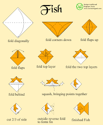
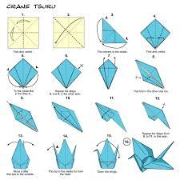
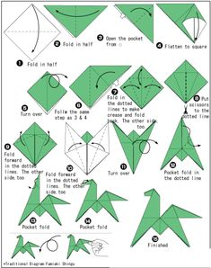
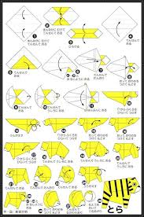
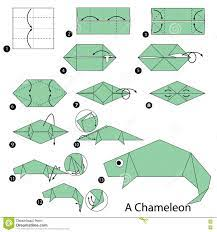
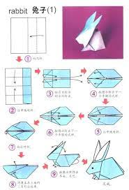

How to make an origami fish

Click the image to see the video
Interesting facts about fishes
The amazing Spotted Climbing Perch is able
to 'gulp' oxygen from the air
Did you know, American Lobsters have
longer life spans than both cats and dogs,
living over 20 years.
Catfish have over 27,000 taste buds,
whereas humans have only 9,000.
How to make an origami dog

Click the image to see the video
Interesting facts about dogs
Their sense of smell is at least 40x
better than ours.
Some have such good noses
they can sniff out medical problems.
Dogs don't sweat like we do.1
How to make an origami crane

Click the image to see the video
Interesting facts about cranes
Cranes are known as the world's tallest
flying birds.
The Demoiselle Crane is the smallest crane
species, while the Sarus Crane
is the tallest crane species.
They can grow tall up to 1-1.8 meters.
How to make an origami frog
Click the image to see the video
Interesting facts about frogs
There are over 5,000 species of frog.
Frogs don't need to drink water as they
absorb it through their skin.
A frog's call is unique to its species,
and some frog calls can be
heard up to a mile away.
How to make an origami horse

Click the image to see the video
Interesting facts about horses
Domestic horses have a lifespan of
around 25 years.
Horses can sleep both lying down
and standing up.
A 19th century horse named 'Old Billy'
is said to have lived 62 years.
How to make an origami tiger

Click the image to see the video
Interesting facts about tigers
The Bengal tiger is the most common tiger.
Tigers live between 20-26 years in the wild.
Tigers are the largest cat species in the world
reaching up to 3.3 meters in length and
weighing up to 670 pounds!
How to make an origami chameleon

Click the image to see the video
Interesting facts about chameleon
Almost half of all known species live in Madagascar
They mainly change their colour in order
to communicate or regulate body temperaturev.
Unlike many lizards, chameleons can't regrow their tails
How to make an origami rabbit

Click the image to see the video
Interesting facts about rabbit
A baby rabbit is called a kit,
a female is called a doe
and a male is called a buck.
Rabbits are very social creatures
that live in groups.
Rabbits perform an athletic leap,
known as a 'binky', when they're happy —
performing twists and kicks in mid air!